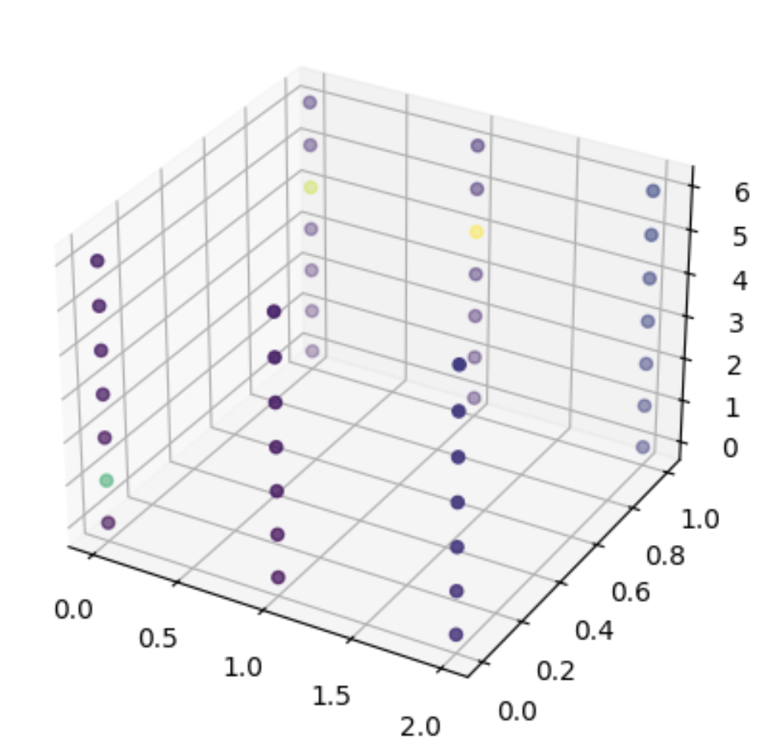

Displaying data
Let’s Do Digital Team
Python data plotting library
- matplotlib (specifically
pyplot)
What is matplotlib.pyplot?
- A library for plotting data in python.
- It is a powerful tool for creating graphs and charts.
- It is widely used in data science and machine learning.
- It is easy to use and has a wide range of features.
matplotlib.pyplot documentation
- There are many ways to look up how to do things with different python libraries.
- You can use a internet search engine, stackoverflow, or the official library documentation, as below:
https://matplotlib.org/3.5.3/api/_as_gen/matplotlib.pyplot.html
Let’s plot some 1D data
Let’s plot some 1D data
Let’s plot some 1D data
- We can however improve this plot by adding some labels and a title.
Let’s plot some 1D data
Let’s plot some 1D data
Tweaking the plot
- As you can see, there is a lot of details on the 1D plot.
- The more dimensions you have, the more tweaking that you will need to do.
- Hence, we will not go into the minutiae of all of the settings you can change, but we will go through the main process of setting up plots.
Plotting 2D data
- Heatmaps are useful
Plotting 2D data
Plotting 2D data
- We too we can improve things with this plot.
- Let’s add a colour bar, a title, labels and format the y-axis ticks.
Plotting 2D data
- Heatmaps are useful
Plotting 2D data
Plotting 3D data
- Here is some 3-dimensional data to plot.
Plotting 3D data
- 3D scatter plots are useful.
Plotting 3D data
Plotting 3D data
- 3D scatter plots are useful
pyplot_3d.py
fig = plot.figure()
ax = fig.add_subplot(111, projection='3d')
x, y, z = np.indices(array_3D.shape)
values = array_3D.flatten()
sc = ax.scatter(x.flatten(), y.flatten(), z.flatten(), c=values, s=100)
cbar_ax = fig.add_axes([0.9, 0.15, 0.05, 0.7])
cbar = fig.colorbar(sc, ax=ax, cax=cbar_ax, shrink=0.5, aspect=5)
ax.set_title('3D Array Visualization')
ax.set_xlabel('Rows')
ax.set_ylabel('Columns')
ax.set_zlabel('Depth')
ax.set_xticks(np.arange(array_3D.shape[0]))
ax.set_yticks(np.arange(array_3D.shape[1]))
plot.show()Plotting 3D data
Now try it yourself!
- Go to the Lesson 3 folder.
- Open
lesson_3.ipynb. - Don’t forget to ask your tutor if you need help.
- See you in 20 minutes.